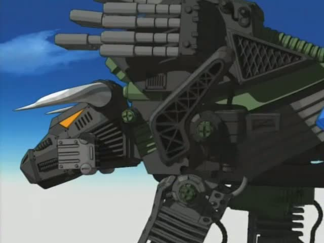
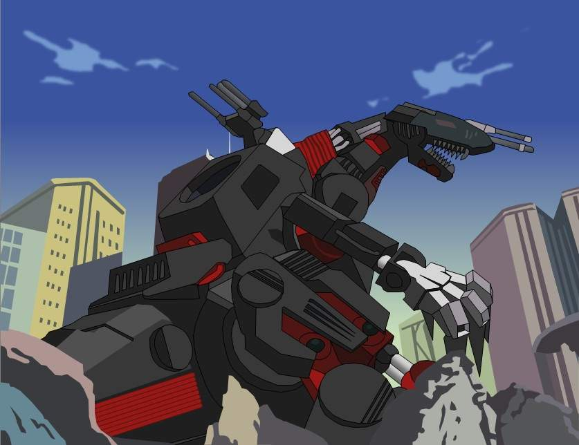

BladeLiger
El Blade Liger es un zoid tipo león, desarrollado por la república de Helic en ZAC 2042.
Si bien la capacidad del Shield Liger fue buena en su momento, el Blade Liger mejora todas
ellas, siendo más rápido y más ágil que su predecesor. Su arma más notable es un par de
Aletas Cortantes capaces de cortar a través de las
armaduras de sus enemigos.

El Blade Liger es un Zoid muy versátil, como resultado, a lo largo de la historia tiene un
gran número de modificaciones, los más notables son la unidad AB que proporciona un aumento
de la velocidad (que se incrementa a 320 km/h).
Dibison
El Dibison es un Zoid tipo búfalo desarrollado por la República de Helic en ZAC2046, a finales
de la Guerra del Continente Central, tras la aparición del zoid imperial Death Saurer.

Los cuernos y pezuñas están formados de una aleación de titanio, llamado "Súper Acero",
considerado el metal más duro del planeta Zi, capaz de penetrar la armadura de un Iron Kong
y Death Saurer.
Death Saurer
El Death Saurer es un zoid de tipo dinosaurio, desarrollado por el imperio de Zenebas durante
la guerra del continente central, en ZAC 2044.

desarrollado como un contrapeso al Ultrasaurus de la república, un Zoid que se considera imparable.
Para lograrlo, el Death Saurer estaba armado con una nueva arma, el Cañón de Partículas Eléctricas.
Esta arma, considerada durante mucho tiempo uno de las más potentes, era capaz de destruir a casi
cualquier objetivo de un solo disparo.